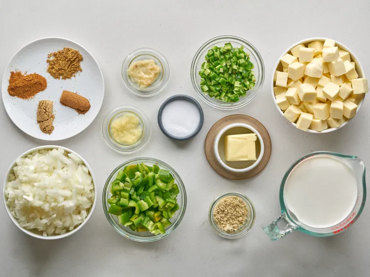
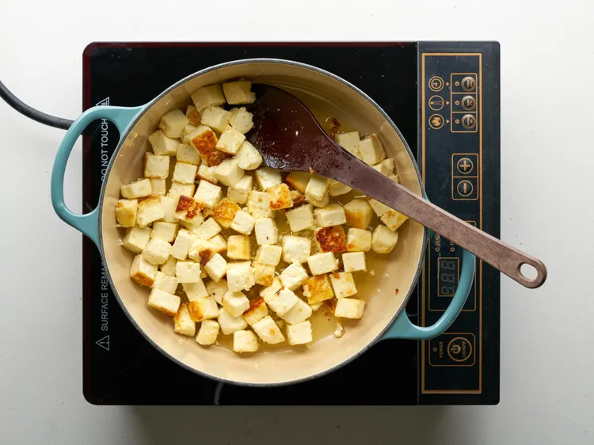

Gather all the ingredients

Melt butter in a skillet over medium heat. Add paneer cubes; cook and stir until golden, about 5 minutes.

Add onions, bell peppers, jalapeños, ground cashews, garlic paste, cayenne pepper, cumin, coriander, and garam masala; cook and stir well until combined and fragrant, about 1 minute.

Mix tomato sauce, half-and-half, and salt and paneer into mixture; simmer until thickened, about 30 minutes.

That's it! You're done! Enjoy it with rice or naan.